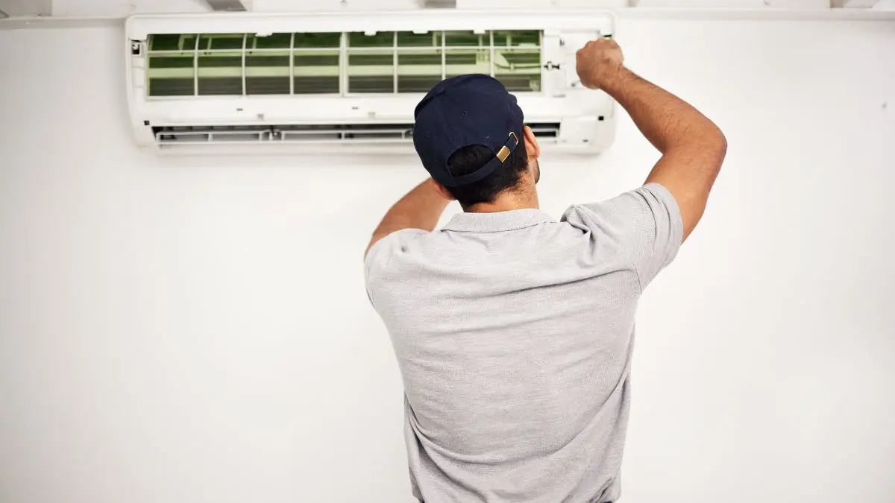

شركة نقل الرياض لخدمات غسل مكيفات الرياض

في حرارة الصيف بالرياض، يصبح المكيف جزءًا لا يتجزأ من الحياة اليومية. لكن الكثير يغفل عن أهم نقطة تضمن استمرار كفاءة المكيف: غسله وتنظيفه وصيانته بشكل دوري. هنا تأتي أهمية شركة نقل الرياض، الشركة الرائدة في غسل مكيفات الرياض وخدمات الصيانة والتنظيف المتكاملة التي تقدمها بمهارة عالية، وسرعة في الأداء، وأسعار في متناول الجميع.
📞 للتواصل مباشرة: 0559865517 او بالضغط هنا
لماذا يجب عليك غسل مكيفك بانتظام؟
ربما تسأل نفسك: “هل يحتاج المكيف فعلاً إلى غسيل؟” والإجابة باختصار: نعم، وبشكل دوري. إليك بعض الأسباب التي توضح ذلك:
-
تحسين جودة الهواء داخل المنزل أو المكتب.
-
توفير استهلاك الكهرباء لأن المكيف النظيف يعمل بكفاءة أعلى.
-
إطالة عمر الجهاز من خلال إزالة الغبار والرواسب التي قد تتلف الأجزاء الداخلية.
-
تقليل احتمالية الأعطال المفاجئة التي قد تحدث بسبب تراكم الأوساخ.
-
التخلص من الروائح الكريهة الناتجة عن العفن أو الرطوبة داخل الوحدة.
لماذا “نقل الرياض” هي الخيار الأمثل في مجال غسل مكيفات الرياض؟
شركة نقل الرياض لا تقدم خدمة سطحية أو مؤقتة، بل تعتمد على خطة شاملة في صيانة وغسل جميع أنواع المكيفات، سواء كانت:
-
مكيفات سبليت
-
مكيفات شباك
-
مكيفات مركزية
-
مكيفات كاسيت
-
أنظمة التكييف المتقدمة للفلل والشركات
نحن لا نغسل فقط، بل نعالج ونحسن الأداء. فريقنا مدرب، مجهز، ويعمل بدقة عالية.
📲 تواصل معنا الآن لحجز موعد: 0559865517
خطوات خدمة غسل المكيفات بالرياض من شركة نقل الرياض
1. التقييم والمعاينة المجانية
أول ما نقوم به هو زيارة الموقع ومعاينة المكيفات لتحديد الحالة الحالية، ونوع التنظيف المطلوب.
2. فك الغطاء وتنظيف الفلاتر
نبدأ بإزالة الغطاء الأمامي للمكيف، وتنظيف الفلاتر باستخدام مواد مخصصة لإزالة الغبار والشوائب بدون التأثير على جودتها.
3. غسيل الوحدة الداخلية
نستخدم معدات ضغط الماء الخاصة لتنظيف الملفات (evaporator coils)، ومراوح التبريد، وكل الأجزاء الحساسة. هذه المرحلة تضمن إزالة الرواسب المتراكمة التي تؤثر على كفاءة التبريد.
4. غسيل الوحدة الخارجية
نقوم بتنظيف المكثف الخارجي ومروحة الطرد والهيكل الخارجي. هذه الخطوة ضرورية لأن الغبار المتراكم بالخارج يسبب ارتفاع الحرارة وفقدان التبريد.
5. التجفيف والتجريب
بعد الانتهاء من التنظيف، يتم تجفيف المكيف بشكل آمن وإعادة تشغيله للتأكد من عمله بكفاءة أعلى من السابق.
مزايا شركة نقل الرياض في مجال تنظيف وغسل مكيفات الرياض:
🔹 سرعة الاستجابة: فور اتصالك بنا على الرقم 0559865517، نرتب موعدًا خلال 24 ساعة.
🔹 أسعار منافسة: خدماتنا تبدأ من أسعار تناسب جميع الفئات، مع عروض خاصة للمؤسسات والعائلات الكبيرة.
🔹 كوادر فنية محترفة: كل الفنيين لدينا مدربون ومؤهلون بخبرة تزيد عن 10 سنوات.
🔹 أدوات متطورة: نستخدم أدوات تنظيف حديثة تضمن حماية المكيف وأداء عملية تنظيف دقيقة.
🔹 خدمة عملاء ممتازة: فريق دعم متواجد يوميًا للرد على استفساراتكم.
🔹 ضمان على الخدمة: نقدم ضمانًا بعد الغسيل والصيانة ضد الأعطال الناتجة عن التنظيف لمدة محددة.
غسل مكيفات الرياض للمنازل والشركات
سواء كنت صاحب منزل، شقة، أو تدير شركة أو مؤسسة تجارية، فنحن نقدم خدمات غسل وصيانة المكيفات حسب الحجم والنوع والموقع. لدينا خطة دورية للشركات والمكاتب لضمان استمرار التكييف بدون توقف.
كما نغسل وننظف أنظمة التكييف في:
-
المدارس
-
المستشفيات
-
المجمعات السكنية
-
المساجد
-
الفنادق
لا تتردد، اتصل الآن: 0559865517
متى تحتاج لغسل المكيف فعليًا؟
ننصح بعمل غسيل شامل مرتين في السنة على الأقل، خاصة في:
-
بداية الصيف، لضمان أن المكيف نظيف ويعمل بكفاءة.
-
نهاية الصيف، لإزالة أي رواسب أو عفن تراكم خلال التشغيل الكثيف.
علامات أخرى تدل على أنك بحاجة إلى الغسيل:
-
ضعف في التبريد
-
أصوات غير طبيعية
-
استهلاك كهرباء مرتفع فجأة
-
رائحة غريبة من المكيف
خدمات إضافية نقدمها:
بالإضافة إلى غسل مكيفات الرياض، نقدم:
✅ صيانة دورية لجميع أنواع المكيفات
✅ تعبئة فريون بجميع أنواعه
✅
كشف تسربات الفريون
✅ تغيير الفلاتر
✅ تبديل القطع
التالفة بأخرى أصلية
✅ تركيب مكيفات جديدة
✅ فك ونقل المكيفات
من مكان لآخر داخل الرياض
كل هذه الخدمات متوفرة بنفس الاحترافية وبنفس الرقم: 0559865517
آراء العملاء في خدماتنا
سعد القحطاني – حي العليا
“طلبت خدمة غسيل مكيفين سبليت وكانوا عندي بنفس اليوم. الشغل نظيف والمكيف صار يبرد كأنّه جديد. شكراً لنقل الرياض.”
أم فهد – حي النرجس
“أنا أتعامل معهم كل صيف. خدمتهم ممتازة، والموظفين محترمين وسريعين.”
م. عبدالعزيز – مكتب هندسي
“تعاملنا معهم لصيانة مكيفات المركز عندنا. سرعة في الأداء واهتمام بالتفاصيل.”
عروض خاصة لفترة محدودة
🎉 خصم 15% عند غسل أكثر من 3 مكيفات
لا تفوت العروض، احجز الآن عبر الاتصال أو الواتساب على: 0559865517
كيف تحجز موعدك مع نقل الرياض؟
-
اتصل أو أرسل رسالة واتساب على: 0559865517
-
حدّد نوع المكيف وعدد الأجهزة والموقع.
-
نحدد لك الوقت المناسب ونرسل الفنيين في الموعد.
-
الدفع نقدًا أو عبر التحويل البنكي.
احمِ بيتك وراحتك… وابدأ مع أفضل خدمة غسل مكيفات الرياض
إذا كنت تهتم براحة عائلتك، وتبحث عن جو نظيف ومنعش، وتريد الحفاظ على استثماراتك في المكيفات، لا تتردد في التواصل مع شركة نقل الرياض. نحن نؤمن أن الخدمة الممتازة تبدأ من الاهتمام بالتفاصيل، وتنتهي بابتسامة رضا العميل.
📞 للحجز والاستفسار: 0559865517
🕒 الخدمة متوفرة طوال أيام الأسبوع 24\7